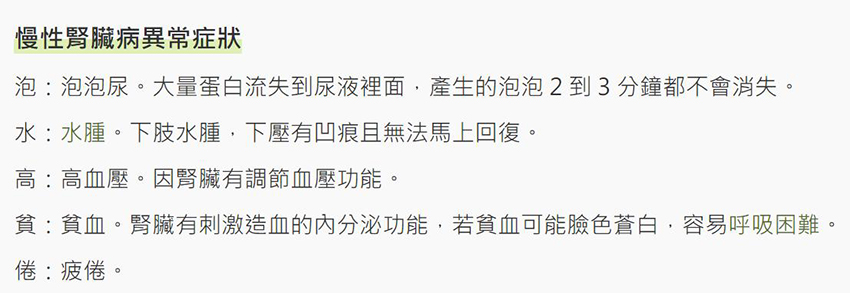

月號－健康大小事
月號－健康大小事明明前一天沒有吃重口味，早上起床照鏡子卻感覺全身浮腫，而且這狀態持續了一整天？明明睡到中午12點精神飽滿，但2小時後又在打瞌睡？如果你有這些症狀要小心了，長庚醫院臨床毒物中心主任顏宗海示警，這可能是腎功能下降前兆。 衛生福利部臺南醫院腎臟科主治醫師張仕昕表示，腎臟健康對每個人都相當重要，因為人體需要透過腎臟製造尿液，替身體做好「排水」和「排毒」，以調解體內的水分、電解質、酸鹼及排除體內毒素，以維持人體生存所需體內環境。 當腎臟因為短時間的「急性腎損傷」，或者長時間的「慢性腎臟病」的功能惡化，進展到失去排水、排毒功能的階段，稱之為「尿毒症」，就可能危急生命。這時就需要緊急「洗腎」來救命。
許多腎病患者最怕尿毒危機，導致進入洗腎治療。其實只要早期發現、及早治療，就能延緩病程惡化，甚至不進入洗腎階段。醫師指出，慢性腎臟病的早期症狀並不明顯，通常需透過抽血及驗尿檢查來診斷。 有三高（糖尿病、高血壓、高血脂）、肥胖、吸菸、長期服用成藥或來路不明藥品、高齡長者（65歲以上）、腎臟病家族史等為慢性腎臟病的高危險群，若出現「泡、水、高、貧、倦」症狀時，應及早至腎臟科檢查，才能早期發現。 | |||
|  | |||
| 不步走入洗腎，請做好4件事 |
醫師提醒，若是慢性病患者，請控制原有的慢性疾病，維持良好的血壓和血糖控制，進行生活型態調整，如飲食調整、養成運動習慣、戒菸等，方能保護腎臟。
醫師表示，若要延緩腎功能惡化或已確診罹患慢性腎臟病，更應積極控制慢性病，維持健康生活習慣，第一步就是改變飲食習慣，少鹽、少糖、少油炸；另外在生活上除了多運動，不抽煙不熬夜不喝酒也很重要；禁止使用來路不明的藥物，例如坊間販售的減肥藥等等，用藥前先諮詢專業醫療人員，才能避免對腎臟造成重大傷害，並配合腎臟專科門診定期追蹤，以延緩慢性腎臟病惡化的速度。
| 要洗腎不擔心，打造「腎」利人生 |
若不幸病情惡化、腎臟已失去功能，無法好好排水、排毒，則需要接受腎臟替代療法。除了大眾所知所謂的「洗腎」，即血液透析，也有腹膜透析和腎臟移植等方式。
但民眾往往聞「洗腎」色變，認為一旦開始洗腎，得終身依賴洗腎，人生就已經「烏有去」，因而逃避洗腎治療，甚至逃避回診，進一步造成生命逝去的憾事發生，相當可惜。
醫師強調，大多數長期進行透析的腎友，也沒有因為開始透析而葬送人生，反而是另一段旅途的開始。若因為急性腎病而開始透析治療，腎功能仍有機會恢復到足以脫離透析，病友無須太過排斥。不論處於腎臟病的哪個階段，都需要腎友與醫療團隊一齊努力，才能打造「腎」利人生。
慢性腎臟病如何延緩進入洗腎時間？醫師提醒做好4件事 - Heho健康
頻繁水腫、嗜睡，小心腎功能下降！「慢性腎臟病」嚴重恐致腎衰竭 - Heho健康